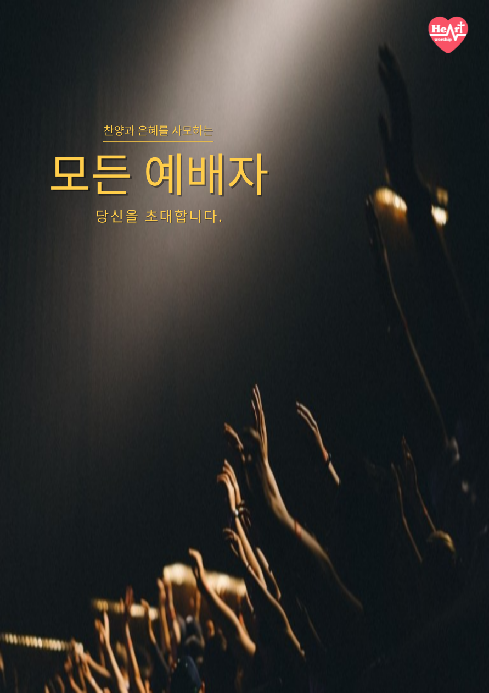

교회의 예배와 찬양집회를 알리기 위한 행사 포스터 디자인 시리즈
각 포스터는 행사 성격에 따라 톤앤무드와 타이포그래피를 다르게 구성
Adobe Photoshop, Illustrator
행사 정보 및 메시지를 강조하는 레이아웃 설계
배경 이미지 보정, 조명 효과 삽입
로고·타이포그래피 조화 조정
인쇄 및 디지털 홍보용 크기별 최적화
모든 예배자 포스터: 스포트라이트와 손을 중심으로 ‘찬양에 집중하는 순간’을 강조
금요 찬양집회 포스터: 현장 감도와 따뜻한 색감으로 ‘함께 예배하는 분위기’ 표현
주일예배 포스터: 블랙 톤과 절제된 레이아웃으로 ‘경건함과 집중’을 시각화
